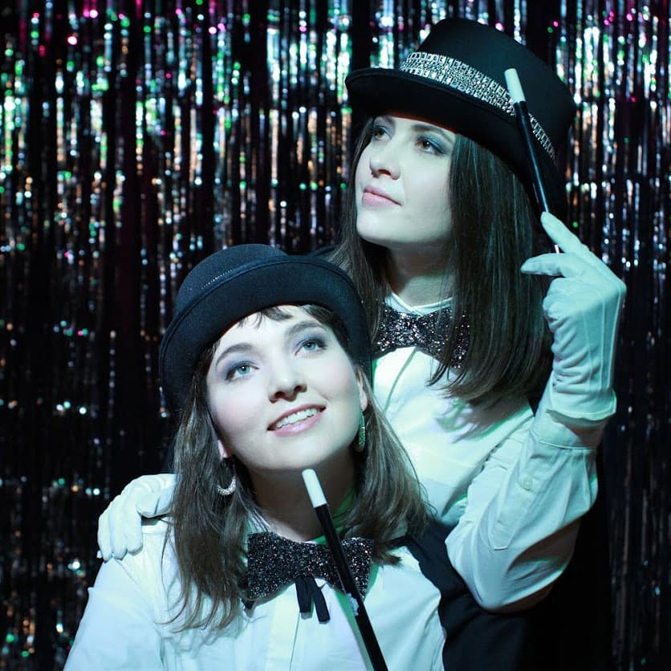

In Magic Falls, magician duo Astrid and Riley, have moved to what they deem to be the epicentre of magic movers-and-shakers: Niagara Falls, Canada, in order to break into the magic scene. As women magicians, they are a small minority in a largely male-dominated field, and on a local scale their immediate adversaries are snarky twin male magicians Zeke and Zork.
By day, the women work as local tour guides, practicing their craft in front of generally indifferent audiences, and take magic gigs whenever they can. They are also haunted by their sordid past -- a magic trick gone awry that resulted in the permanent vanishing of the third member of their trio.
When they catch wind of an open-call audition for a residency on-stage at a local casino, the women become singularly determined to win out against the twins and use the opportunity to prove themselves in the magic community at large.
